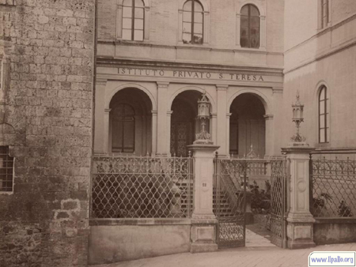

Infatti al termine del 1° tempo l'Istituto tecnico era già in vantaggio di quattro goals.
Il secondo tempo è stato condotto con meno impegno; ciò nonostante la squadra senese poteva segnare altri due goals e la squadra aretina salvava l'onore.
Il pubblico, numerosissimo, composto in massima parte di studenti, è stato prodigo di applausi ai vincitori e ai vinti.
Hanno presenziato pure il Preside dell'Istituto Tecnico e il professore Vittorio Rupi, che si sono particolarmente interessati per la ottima riuscita della manifestazione sportiva.

l'edificio che per molti anni fu sede dell'Istituto Tecnico
La squadra senese era così composta:
Contorni, Ferri, Fineschi, Vieri, Brandi, versace, Roggi, Dominici, Zanaboni, Materozzi, Giannelli.
I goals sono stati segnati da Zanaboni (2), Dominici (2), Roggi e Materozzi

 ACCADDE OGGI
ACCADDE OGGI